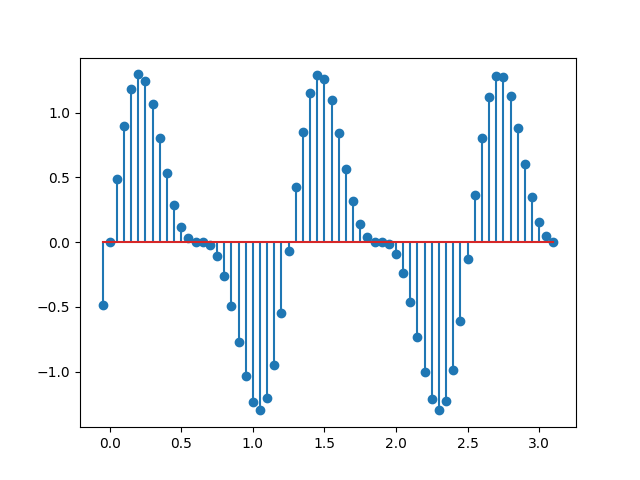
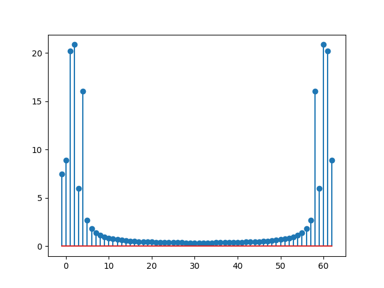

Frekans Analizi, Periyodik Sinyaller
Bir periyodik sinyali nasıl analiz ederiz? Kendimiz bir sinyal oluşturmak istesek bunu nasıl yapacağımızı düşünelim; \(\sin\) ya da \(\cos\) fonksiyonlarının bir periyotu vardır, \(0,2\pi\) arasındaki değerler \(2\pi,4\pi\) arasında tekrar eder, vs.. Bazı ek özellikler; mesela \(\cos\) sıfır noktasında 1 değerine sahip, fakat elimizdeki zaman serisi sağa ya da sola "kaymış'' olabilir, buna faz kayması (phase shift) deniyor, yani sıfır noktasında değer 1 olmayabilir. Ayrıca -1,+1 arasında gidip gelmek yerine mesela -10,+10 arasında gidip gelinebilir, buna genlik deniyor (amplitude). Bir diğer özellik \(0,2\pi\) arasında tek bir periyot yerine birden fazla periyot olabilmesi (frekans değişimi).
Frekans ile başlayalım, önce normal bir kosinüs sinyali,
t = np.linspace(0,10,100)
plt.plot(t, np.cos(t))
plt.xlim(0,10)
plt.savefig('compscieng_1_30_04.png')Her \(\pi\) noktasını gösterelim,
plt.plot(t, np.cos(t))
plt.axvline(0,lw='1',ls='dashed',color='r')
plt.axvline(np.pi,lw='1',ls='dashed',color='r')
plt.axvline(2*np.pi,lw='1',ls='dashed',color='r')
plt.axvline(3*np.pi,lw='1',ls='dashed',color='r')
plt.xlim(0,10)
plt.savefig('compscieng_1_30_05.png')Bu sinyalde \(\cos\)'a verilen \(t\) değerlerini iki ile çarpsam ne olur? \(0,2\pi\) arasında bir periyot için daha önceki \(t\)'lerin yarısı ile bu iş yapılabilir, demek ki önceki tek periyot içinde şimdi sinyal iki kez tur atacaktır. O zaman \(\cos\) içinde bir sabit ile çarpım yapmak ile frekansı o kadar arttırmış oldum,
plt.plot(t, np.cos(2*t))
plt.axvline(0,lw='1',ls='dashed',color='r')
plt.axvline(np.pi,lw='1',ls='dashed',color='r')
plt.axvline(2*np.pi,lw='1',ls='dashed',color='r')
plt.axvline(3*np.pi,lw='1',ls='dashed',color='r')
plt.xlim(0,10)
plt.savefig('compscieng_1_30_06.png')-1/+1 arasında gidip gelmeyi arttırmak en kolayı, \(\cos\) hesabından elde edilen değeri mesela 10 ile çarparsam genlik o kadar artar. Faz kaydırma \(\cos\) içinde bir toplam olabilir. Tüm resmi göstermek gerekirse, \(A\) genlik, \(f_0\) frekans, faz kayması \(\phi\) olacak şekilde,
\[ x(t) = A \cos (2\pi f_0 t - \phi) \]
Bu formülün grafiği,
Direk formüle bakarak \(A\) hemen anlaşılabiliyor. Frekans \(t\)'yi çarpan değerle orantılı, yanlız dikkat, bu değer her zaman \(2\pi\)'ye oranlı bir şey, yani formül \(\cos(10 t)\) gibi bir ifade içeriyorsa, \(10 / 2\pi\) ile \(f_0\)'yi çıkartmamız gerekir. Eğer \(t\) saniye birimine sahipse, bir periyot \(T_0 = 1/f_0 = 0.5\) saniyedir, ve frekans 2 Hertz olacaktır. Eğer frekans \(w_0 = 2\pi f_o\) formunda gösterilirse, o zaman birim radyan / saniye olur.
Faz kayması \(\phi\) sebebiyle tepe noktanın nerede olduğu da direk formülden anlaşılamıyor, biraz ek hesap lazım, üstteki örnekte 3/16, bunu bulmak için "kosinüse geçilen değerin sıfır olduğu yer'' gerekli,
\[ 0 = 2\pi \cdot 2 \cdot t - 3\pi/4 \implies t = 3\pi / (4 \cdot 4\pi) \implies t = 3/16 \]
Fakat hala faz kayması \(3\pi/4\) diyebiliriz.
Örneklemek (Sampling)
Sayısal, yani bilgisayar ortamında bilgiler ayrıksaldır, kimse bize üstteki sürekli formül formatıyla sinyal parametrelerini vermez. Diyelim ki bir sinyalin saniyede 10 tane örneklemini alıyoruz. O zaman 3 saniye sonra elimizde 30 veri noktası olacak. Fakat her örneklem frekansı gerçek sinyali anlamak için yeterli değildir. Nyquist teorisine göre örneklem gerçek frekansın en az iki katı olmalıdır. Altta bazı örnekler görülüyor, en alttaki örneklem frekansı dalga frekansı ile aynı, ve bu sinyali anlamak için yeterli değil. Veri noktalarına bakarak onların ilk üç noktada bir düz çizgi oluşturduğunu zannedebilirdik.
Tabii sadece ayrıksal frekansa bakarak sinyalin frekansının ne olduğunu anlamak ta mümkün degil. Eğer bir şekilde gercek sinyalin kaç örneklemde bir tekrar ettiğini bulursak, o zaman yaklaşık bir frekans bulabiliriz; mesela bir sinüssel sinyalin 20 ölçümde bir tekrar ettiğini bulduk, ve örneklem periyotu 0.05 milisaniye / örneklem ise (her iki örneklem arası geçen zaman), o zaman
\[ \textrm{sinüs dalgası periyotu} = \frac{20 \textrm{ örneklem}}{periyot} \frac{0.05 \textrm{ milisaniye}}{\textrm{örneklem}} = 1 milisaniye \]
Demek ki periyot 1 / 1 milisaniye = 1 Khz. Ya örneklem periyotu 2 milisaniye olsaydı? O zaman sinüs dalga periyotu 40 milisaniye olurdu, ve gerçek frekans 25 Hz olurdu. Söylemek istediğimiz ayrıksal durumda Hz. bazında gerçek frekansın hesabı her zaman örneklem frekansına \(f_s\)'e bağlıdır,
\[ f_s = 1 / t_s\]
Ayrıksal Fourier Transformu
[4]'te sürekli Fourier Transformunu gördük,
\[ X(f) = \int_{-\infty}^{\infty} x(t) e^{j2\pi ft} \mathrm{d} t \]
ki \(x(t)\) zaman bazlı sürekli bir sinyaldir. Bilgisayarlar sayesinde üstteki işlemi ayrıksal olarak yapabiliyoruz [2, sf. 46],
\[ X(m) = \sum_{n=0}^{N-1} x(n) e^{-j2\pi nm / N} \]
\(x(n)\) her \(n\) anında, bir \(n\) indisiyle erişilen, bir anlamda \(x(t)\)'den "örneklenmiş'' sinyal verisi olacaktır, \(e\) tabii ki doğal logaritma bazı, \(j\) ise hayali sayı \(j = \sqrt{-1}\). Euler ilişkisi \(e^{-j\phi} = \cos(\phi) - j\sin(\phi)\)'den hareketle üstteki ayrıksal denklem alttakine eşittir,
\[ X(m) = \sum_{n=0}^{N-1} x(n) [ \cos(2\pi nm / N) - j \sin(2\pi nm / N)] \qquad (1) \]
\(X(m)\): \(m\)'inci DFT bileşeni / katsayısı - \(X(0),X(1),..\) diye gidiyor
\(m\): Frekans yöresindeki (domain) DFT çıktısının katsayı indisi
\(x(n)\): Zaman yöresindeki bilginin ayrıksal verisi
\(n\): Zaman verisi indisi
\(N\): Giriş verisinden ve çıktı frekans noktalarından kaç tane olduğu
Örnek
Diyelim ki elimizde biri 1 kHz ve diğeri 2 kHz'lük frekanslardan oluşan bir sinyal var, bu sinyalin sürekli hali şöyle,
\[ x(t) = \sin(2\pi \cdot 1000 \cdot t) + 0.5 \sin (2\pi \cdot t + 3\pi/4)\]
Sinyali örnekleme oranımız \(f_s = 8000\), her saniye \(f_s\) kadar örneklem alıyoruz, her veri nokta arasındaki zaman farkı \(t_s = 1/f_s\). Elimizdeki bu hızda ardı ardına alınmış 8 tane veri noktası olsun, yani \(N=8\). Ayrıksal formül,
\[ x(n) = \sin(2\pi \cdot 1000 \cdot nt_s) + 0.5 \sin (2\pi \cdot nt_s + 3\pi/4) \]
Bu noktalarda \(x(n)\) değerleri
fs = 8000.; ts = 1/fs
def x(n):
return np.sin(2*np.pi*1000*n*ts) + 0.5*np.sin(2*np.pi*2000*n*ts + 3*np.pi / 4)
for n in range(8): print np.round(x(n),4),0.3536 0.3536 0.6464 1.0607 0.3536 -1.0607 -1.3536 -0.3536Şimdi \(x(n)\) girdisine DFT uygulayacağız. Eğer 1 kHz'un Fourier katsayılarını merak ediyorsak, \(X(1)\) hesaplarız, yani (1) formülü kullanılacak, ki formül şuna benzer,
\[ X(1) = \sum_{n=0}^{7} x(n)\cos(2\pi n / 8) - jx(n)\sin(2\pi n / 8) \]
Genel kodla gösterelim,
def X(m):
real = 0.0; imag = 0.0
for n in range(8):
real += x(n)*np.cos(2*np.pi*m*n/8.)
imag -= x(n)*np.sin(2*np.pi*m*n/8.)
return np.round(real,4), imag
print X(1)(-0.0, -4.0)2 kHz için ne olur?
print X(2)(1.4141999999999999, 1.4142135623730947)Bu sonuçlarda 1. kısım sayının reel tarafı, 2. kısmı pür kompleks tarafı. Çoğunlukla bu elde edilen \(X(m)\) sayısının büyüklüğü (magnitude) ile ilgileniriz, bu hesap
\[ X_{\textrm{büyüklük}} = |X(m)| = \sqrt{X_{reel}(m)^2 + X_{kompleks}(m)^2}\]
olarak yapılıyor. numpy.abs çağrısı bu hesabı hayali sayılar üzerinde otomatik olarak yapar.
r,i = X(2)
print res, u'büyüklük', np.abs(complex(r,i))-5.55111512313e-17j büyüklük 1.99999040998Büyüklüğe bakılırsa 2 Khz frekansının katsayısı ufak değil, demek ki bu frekans sinyal içinde var / önemli. 3 Khz'e bakalım,
r,i = X(3)
print res, u'büyüklük', np.abs(complex(r,i))-5.55111512313e-17j büyüklük 5.55111512313e-17Çok ufak, demek ki bu frekans sinyal içinde mevcut değil.
Örnekte sürekli bir formül kullanarak \(x(n)\) hesabı yapılmış olması ayrıksallığın nerede başlayıp bittiği hakkında kafa karışıklığı yaratmasın; analitik formül iki yöre arasında gidiş / geliş nasıl oluyor bunu göstermek için verildi. Çoğunlukla elimizde sadece bir tek boyutlu bir dizi içinde bir veri serisi olur, bu verinin hangi analitik formülden geldiğini bilmeyiz (Fourier analizini onun için yapıyoruz zaten!), veri hakkında eldeki diğer tek bilgi onun örneklem frekansı olur.
Bir örnek üzerinde daha görelim [3, sf. 152], bu sefer kütüphane çağrısı scipy.fft ile analiz yapalım,
import scipy
N = 64; n = np.arange(N) - 1; T = 0.05;
t = n*T; xbn = np.sin(w1*t)+ 0.5*np.sin(w2*t);
plt.stem(t,xbn)
plt.savefig('compscieng_1_30_08.png')
k = np.arange(N) - 1
Xb = scipy.fft(xbn);
plt.figure()
plt.stem(k,abs(Xb))
plt.savefig('compscieng_1_30_09.png') 
Üst sağdaki frekans analizine göre \(k=2\) ve \(5\)'te büyüklük var, bu değerler \(k\omega_0 = 2\pi k / NT\) ile \(\pi\) bazına çevirilebilir, \(k=2\) için \(2\pi k / 3.2 = 1.25 \pi\) olur, \(k=5\) için \(3.125 \pi\) elde ederiz.
Ders 15
[Strang hocanın notlarından. Üstteki DFT yöntemi toplamlar, döngüler, belli indisler kullanarak yapılıyor. Altta Strang'in anlattığı yaklaşımla, bir sinyalin belli frekansların katsayılarla ağırlıklanmış toplamı olduğu temel Fourier formülüyle başlarız, fakat diğer yöne gitmek için pür lineer cebir kullanırız, böylece katsayı hesabı bir matris tersi alma işlemi haline gelir].
Ayrıksal (discrete) olarak Fourier modellemesi yapmak istiyorsak, elimizde devamlı (continuous) f(x) fonksiyonu olmayacak, bir f(x) fonksiyonun belli noktalarındaki değerleri (olduğunu farzettiğimiz) verileri içeren bir {} olacak. Bu vektörün N elemanı var diyelim. Fonksiyon periyodik olduğuna göre, x için \(2\pi\)'i N eşit parçaya böleriz (tahtadan alınan resim altta). Bunu söylemekle fonksiyonun periyotunun \(N\) olduğunu farz etmiş oluyoruz, bir anlamda diyoruz ki eğer elimizde \(N\) tane daha nokta olsaydı, onlar elimizde olan değerlerle tıpatıp aynı olacaktı. Örneğimizde N=4 olsun.
Ayrıca \(F(x)\) formülü biraz değişecek. Elimizde sonsuz tane nokta olmadığına göre
\[ F(x) = \sum_{n=0}^{N} c_ne^{inx} \]
olması lazım. Şimdi, eğer bütün \(c_k\) değerlerini biliyor olsaydık, bu fonksiyon, x=0 noktasında hangi değere sahip olurdu?
\[ f(0) = c_0 + c_1 + c_2 + c_3 + c_4 = Y_0 \]
Sonraki \(x\) değerleri \(2\pi/N, 4\pi/N, ..\) için (çünkü her parça \(2\pi/N\), bir sonraki parça \(2\pi/N + 2\pi/N\), bir kere topluyoruz, yani parçayı \(2\) ile çarpıyoruz, sonra \(3\) ile, vs) aşağıdaki gibi devam edeceğiz, ama ondan önce bir \(w\) değişkeni tanımlayalım, bu değişkeni \(w=e^{2\pi i/N}\) olarak alalım. Böylece \(w^2\) dediğimizde üstel işlemlerde çarpım işlemi toplama işlemine dönüşeceği için \(e^{4i\pi/N}\) değeri elde edilebilir, \(w^3\) ile \(e^{6i\pi/N}\) elde edilir, vs. Bu değerler bize lazım olacak değerler, \(w\) sayesinde formüller daha temiz olacak. \(F(2\pi/N)\) içindeki 3. terim (\(n=2\)) nedir? \(c_ne^{inx} = c_2e^{2i2\pi/N} = c_2e^{4i\pi/N} = c_2w^2\). O zaman
\[ f(2\pi/N) = c_o + wc_1 + w^2c_2 + w^3c_3 = Y_1 \]
Devam edelim:
\[ f(4\pi/N) = c_o + w^2c_1 + w^4c_2 + w^6c_3 = Y_2 \]
\[ f(6\pi/N) = c_o + w^3c_1 + w^6c_2 + w^9c_3 = Y_3 \]
Elimizdeki dört toplam işlemine bakınca, bu toplamlar ve çarpımların aslında lineer cebir üzerinden matrisler ile gösterilebildiğini farkedebiliriz.
\[ \left[ \begin{array}{c} Y_0 \\ Y_1 \\ Y_2 \\ Y_3 \end{array} \right] = \left[ \begin{array}{cccc} 1 & 1 & 1 & 1 \\ 1 & w & w^2 & w^3 \\ 1 & w^2 & w^4 & w^6 \\ 1 & w^3 & w^6 & w^9 \end{array} \right] \left[ \begin{array}{c} c_0 \\ c_1 \\ c_2 \\ c_3 \end{array} \right] \\ \]
Her matris için bir değişken kullanırsak
\[ Y = WC \]
F(x)'ten (yani Y'den) C'ye gitmek istersek, elimizde \(Y_n\) değerleri var, \(w\) değerleri zaten sabittir, W bu sabit değere göre oluşturulur, o zaman, \(c_n\) sayılarını nasıl buluruz?
\[ Y = WC \]
\[ W^{-1}Y = W^{-1}WC \]
\[ W^{-1}Y = C \]
Yani \(W\) matrisinin tersini (inverse) alıp, onu \(Y\) ile çarpınca elimize \(C\) değerleri geçecek [1, sf. 340-370].
Güneş Benekleri
Güneşte periyodik olarak olan benekler, aşağı yukarı 11 senede bir ortaya çıkarlar. Bu benekler uzun süredir gözlenmekte ve ölçülmektedir, şiddetlerine göre, sunspots.dat adlı dosyada bulabiliriz.
tempdata = np.loadtxt('sunspots.dat')
year=tempdata[:,0]; sunspots=tempdata[:,1]
year=year[year<2001]; sunspots=sunspots[year<2001]
plt.plot(year,sunspots)
plt.title(u'Güneş Benekleri')
plt.savefig('compscieng_1_30_03.png')Benek verisindeki periyodik oluşu Fourier transformu ile analiz edelim. Alttaki kod \(w\), \(W\)'yi kullanarak üstteki çarpımlarla \(C\) vektörünü bulacak. Bu vektör içindeki sayılar Fourier analizindeki belli frekanslara, harmoniklere tekabül ediyor olacaklar. Bu \(C\) değerlerinde bazıları diğerlerinden daha güçlü bir etkidir, mesela 11 senelik periyot C içinde daha belirgin olarak çıkmalı.
import scipy
tempdata = np.loadtxt("sunspots.dat")
year=tempdata[:,0]
Y=tempdata[:,1]
N = len(Y)
w = np.exp((2*np.pi*1j)/N)
W = np.zeros((N,N), complex)
for i in range(N):
for k in range(N):
W[i,k] = w**(i*k)
C = np.dot(np.linalg.inv(W), Y) Periyotların grafiği,
n=len(Y); print 'n=',n
power = np.abs(C[0:int(n/2)])**2
nyquist = 1./2
freq = np.array(map(float, np.array(arange(0,int(n/2))))) / (n/2)*nyquist
print 'len(freq)=',len(freq)
period=1./freq;
plt.plot(period,power)
plt.xlim(0,30)
plt.savefig('compscieng_1_30_02.png')n= 305
len(freq)= 15211 sene civarında belirgin bir frekans olduğunu görebiliyoruz.
FFT
Bitirmeden önce FFT konusundan bahsedelim. \(*D*\)FT algoritması kodda görüldüğü gibi bir W matrisi ortaya çıkarır ve önce tersini alma, sonra bu ters ile bir çarpım işlemi yaparak C sonucunu üretir. \(O\) notasyonunu kullanırsak DFT'nin karmaşıklığı \(O(N^2)\)'dir. Bu iyi bir hızdır.
FFT algoritması üstteki çarpımın bazı özelliklerini kullanarak DFT'yi daha da hızlandırır ve \(O(\frac{1}{2}Nlog_2N)\) hızına getirir. FFT'den bu makalede bahsetmeyeceğiz, aklımızda olsun, scipy.fft çağrısı bu algoritmayı kullanır, örnek:
C = scipy.fft(Y)
print C[:3][ 15318.00000000 +0.j 1153.09522938 +866.74784921j
-72.35158374+1347.22954505j]Soru
FFT yaklaşıksal bir algoritma mıdır? Yani DFT'nin elde değerlere "yakın'' değerler daha hızlı mı hesaplanıyor?
Cevap
FFT ile DFT tıpatıp aynı katsayıları hesaplıyorlar, FFT sadece bu hesabı daha hızlı yapıyor.
Lomb-Scargle
Daha önceki bir yazida güneş beneklerinin ortaya çıkışı verisinde periyotlar bulmak için Fourier analizi kullanmıştık. Bu analizin eksik bir tarafı istatistiki önemlilik (significance) hesabını göstermemesi. Daha iyi bir yöntem Lomb-Scargle yöntemi, ki bu yönteme göre periyot bulmak pek çok sinüs eğrisinin hangilerinin veriye daha iyi uyduğunu bulma problemine çeviriliyor, problem bir tür en az kareler çözümü haline geliyor, arka planda FFT kullanılıyor fakat problemin ana modeli artık FFT değil. Güneş benekleri,
tempdata = np.loadtxt('sunspots.dat')
year=tempdata[:,0]; sunspots=tempdata[:,1]
year=year[year<2001]; sunspots=sunspots[year<2001]
plt.plot(year,sunspots)
plt.title(u'Güneş Benekleri')
plt.savefig('tser_ar_06.png')from astroML.time_series import lomb_scargle
omega = np.linspace(1, 40, 200)
dy = 0.5 + 0.5 * np.random.random(len(sunspots))
sig = np.array([0.1, 0.01, 0.001])
PS, z = lomb_scargle(year, sunspots, dy, omega, generalized=True, significance=sig)
plt.plot(omega,PS)
plt.hold(True)
xlim = (omega[0], omega[-1])
for zi, pi in zip(z, sig):
plt.plot(xlim, (zi, zi), ':k', lw=1)
plt.text(xlim[-1] - 0.001, zi - 0.02, "$%.1g$" % pi, ha='right', va='top')
plt.hold(True)
plt.title(u'Güneş Benekleri Periyotları')
plt.savefig('tser_ar_07.png')Grafikte 0.1, 0.01, 0.001 önemliliğini yatay çizgiler olarak görüyoruz; bu çizgilerin üzerindeki her tepe noktası önemli bir periyottur.
Bir diğer örnek: Altta dünyada 500 kusur milyon yıl geriye giden canlı tükenme yüzde grafiği görülüyor [7]. Mesela yaklaşık 66 milyon sene önce bir göktaşı çarpmasıyla müthiş bir tükeniş yaşandı, zaten dinazorların yokolması bu olay ile oldu. Bu olay grafikte açık bir şekilde görülüyor.
import pandas as pd
ext = pd.DataFrame(pd.read_csv('extinct.csv',header=None))
ext2 = ext.set_index(np.linspace(542,1,len(ext)))
ext2[0].plot()
ext = ext[0]
plt.savefig('tser_ar_09.png')Soru şu: acaba bu verideki periyotlar hangileri? Tükenişte belli periyotlar var mı?
from astroML.time_series import lomb_scargle
dy = 0.5 + 0.5 * np.random.random(len(ext))
omega = np.linspace(10, 100, 1000)
sig = np.array([0.1, 0.01, 0.001])
PS, z = lomb_scargle(ext.index, ext, dy, omega, generalized=True, significance=sig)
plt.plot(omega,PS)
plt.hold(True)
xlim = (omega[0], omega[-1])
for zi, pi in zip(z, sig):
plt.plot(xlim, (zi, zi), ':k', lw=1)
plt.text(xlim[-1] - 0.001, zi - 0.02, "$%.1g$" % pi, ha='right', va='top')
plt.hold(True)
plt.title(u'Canlıların Tükenme Periyotları')
plt.savefig('tser_ar_08.png')Grafiğe göre yaklaşık 25 milyon, 70 milyon yılda bir rutin tükenişler görülüyor.
Kaynaklar
[1] Strang, Computational Science and Engineering
[2] Lyons, Understanding Digital Signal Processing, 2nd Edition
[3] Wang, Applied Numerical Methods Using Matlab
[4] Bayramlı, Diferansiyel Denklemler, Ders 15
[7] Bayramlı, Grafikten Veri Çıkartmak, https://burakbayramli.github.io/dersblog/sk/2017/01/grafikten-veri-cikartmak.html